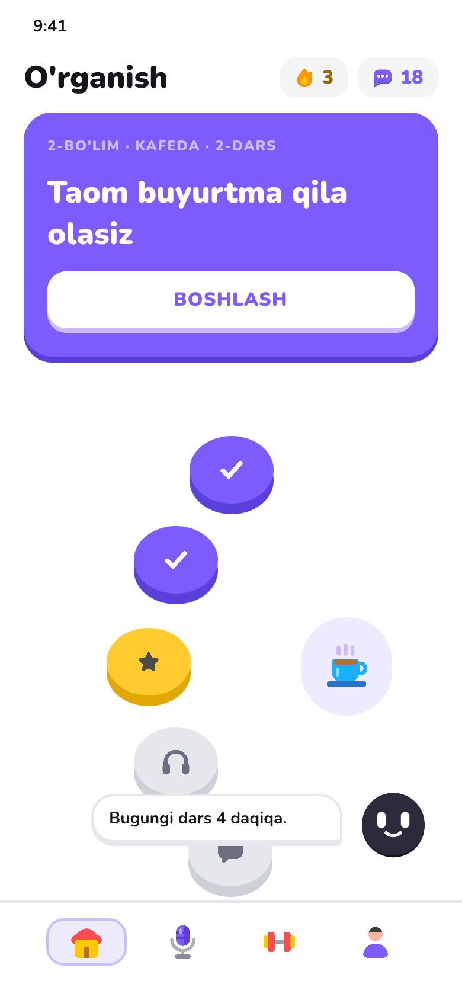
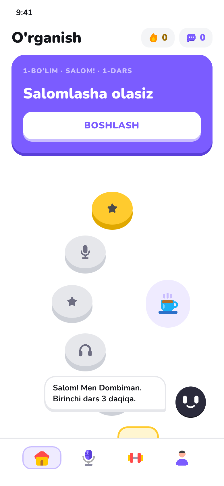
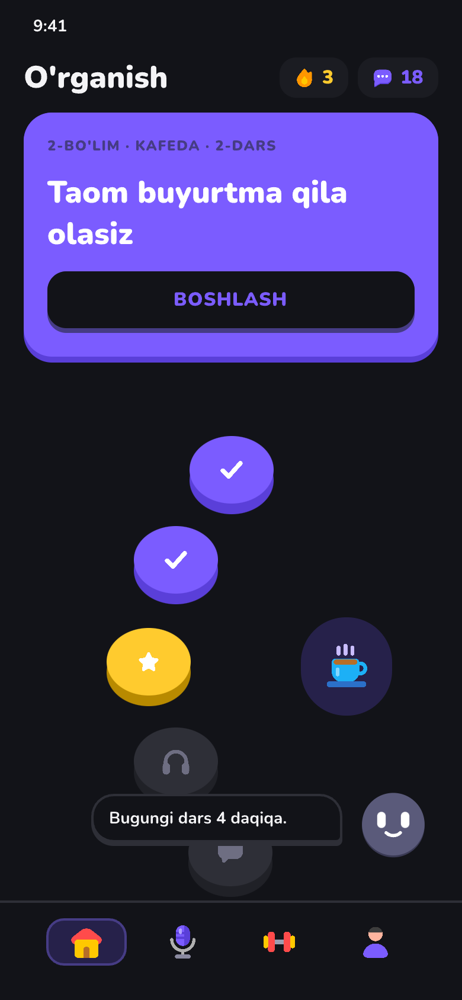
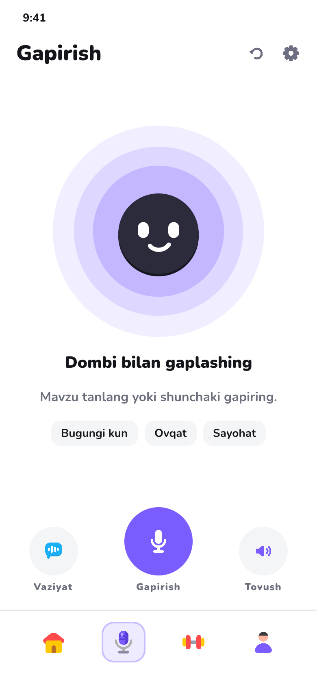
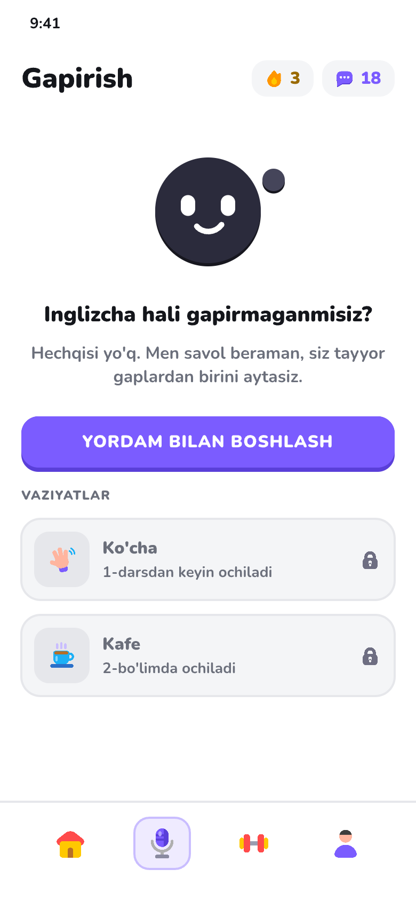
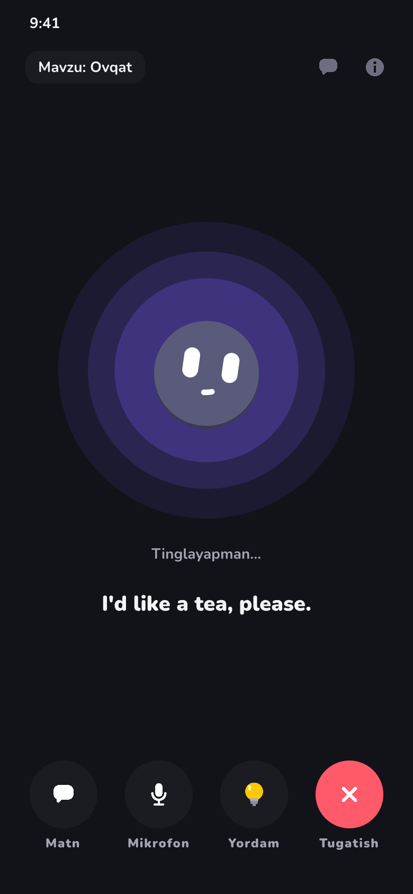
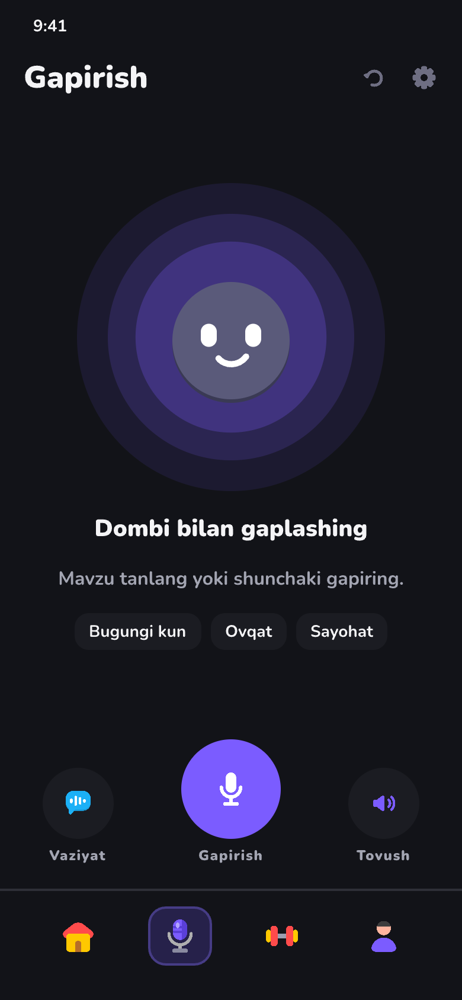
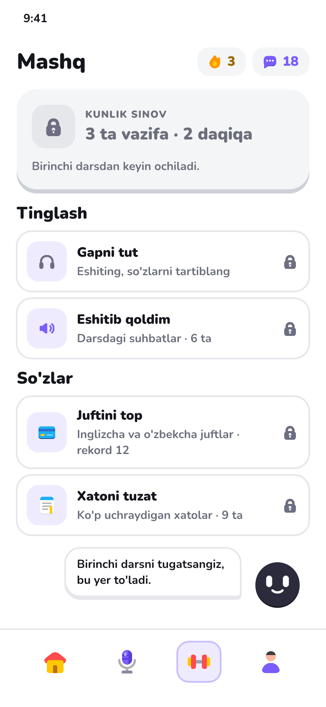
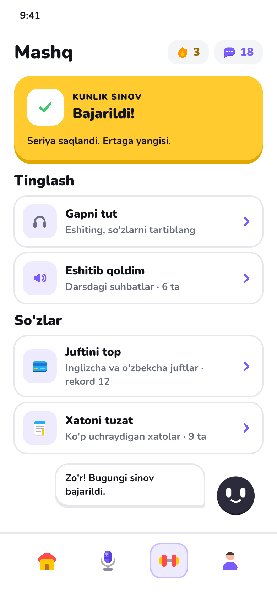
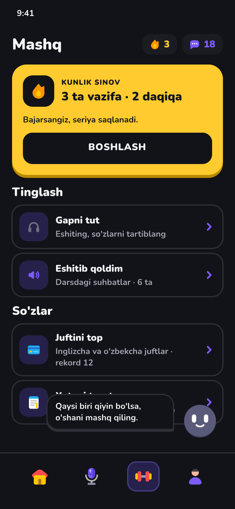

Pick one version of each tab
Press Choose under the version you like for each tab, and write in the box anything to change or mix ("B, but with A's top card"). Then mark each Uzbek line OK or Change. Everything saves as you go, and Claude reads it from here. You can also leave comments on the page.
Connecting…
Learn A · Speak B · Practice C
The versions you chose, finished with their first-time screens and dark mode. Dombi's bubble is redone (compact, one pointed corner toward him) and the line you flagged now reads "Bugungi dars 4 daqiqa." Me is still open below: pick D, E or F.











New Uzbek lines
Mark each line OK, or Change and type the better version.